InfoEdit
Probing Global Layout Reasoning in Infographic Editing
tl;dr
InfoEdit is the first benchmark for infographic editing, and it targets the capability existing benchmarks rarely measure: reflow. We evaluate both pathways: pixel-level image editors, and code-level editing over the HTML/PowerPoint source. Neither works well. The best pixel-level editor reaches 62.0% average success rate and the best code-level system 61.6%, while most editors fall below 7%.
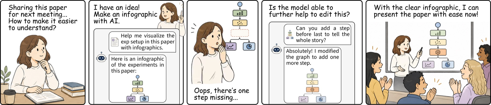
Reflow is the missing capability
Multimodal foundation models edit natural photographs at production quality, yet the same models struggle with structured visual content such as infographics. Unlike photographs, infographics encode information through logical relations; editing one element often requires surrounding elements to be adapted. We refer to this global layout reasoning capability as reflow. Existing image-editing benchmarks neither provide a dedicated setting for structured visual content nor evaluate the reflow capability.
We introduce InfoEdit, a novel benchmark of 1,000 infographics across eight logical-relation families, paired with 4,000 editing instructions across four editing tasks, and a reflow-aware evaluation protocol. Across eight frontier editors, only GPT-Image-2 clears 60% average success rate; most models fall below 7%, and no editor exceeds 35% on the Swap-Block task even with perfect target localization. We further show that code-level editing can match the strongest pixel-level editor, revealing complementary strengths across tasks. InfoEdit identifies reflow as a central challenge in structured visual content editing and provides a diagnostic benchmark to facilitate future progress.
What InfoEdit measures
Given an original infographic X and an instruction I that names a structural change, an editor must produce X′ that satisfies two predicates at once: the named change is faithfully executed, and every element the instruction did not mention survives — free to reflow to accommodate the change.
CEdit Compliance
The change named by the instruction is executed on its target: the right element, at the right anchor, with its content fully rendered inside the canvas.
PContent Preservation
Every other element of the source survives intact. Repositioning, resizing, re-wrapping and connector rerouting are allowed — that is reflow, not failure.
SRSuccess Rate
An edit counts as a success only when both predicates hold. The decomposition exposes correct edits that silently damage unmentioned neighbors.
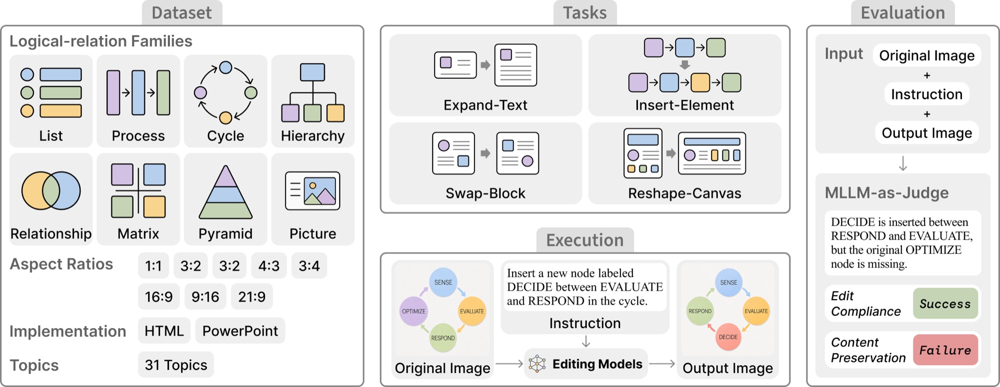
1,000 infographics, eight logical relations
Every infographic is topically realistic, aesthetically credible, and — crucially — logically structured: it conveys information through visual logical-relation components. Each family imposes its own reflow contract that any valid edit must satisfy. Each infographic ships with an editable, structurally addressable source file: 800 in HTML/CSS and 200 in PowerPoint.
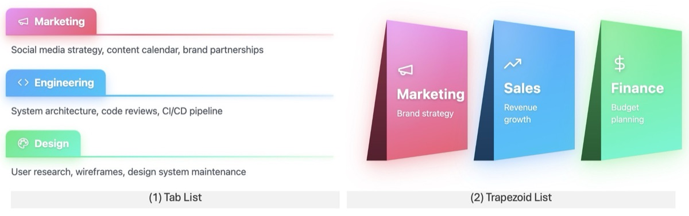
List
Family annotations are not mutually exclusive: 81% of infographics compose two to six families on one canvas, so the shares above sum to more than 100%.
Diversity and coverage
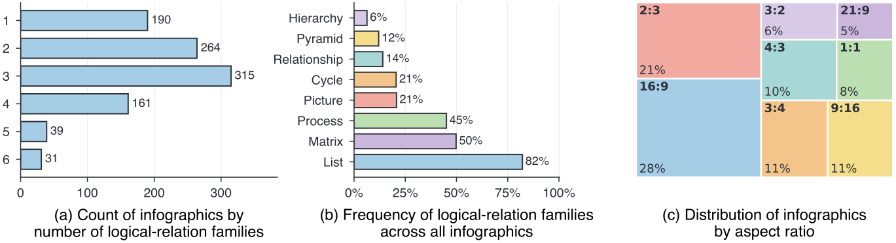
Annotation pipeline
Five stages, with expert annotators in the loop at every step.
Topic sourcing
We define 31 topic categories where infographics are commonly produced (e.g. companies, athletes) and prompt Claude-Opus-4.7, Gemini-3.1-Pro and GPT-5.4 to iteratively enumerate 200 concrete topics per category — 6,200 candidate topics.
Visual reference collection
For each candidate topic we generate a reference image with Nanobanana-Pro and GPT-Image-1.5. References supply the color palette only, never content to reproduce. Expert annotators select 1,000 aesthetically coherent, topic-faithful references.
Logical template construction
We build a library of 79 templates instantiating the eight families. Each template has two implementations: an HTML version exposing nodes, edges and containers as addressable DOM elements, and a PowerPoint version using named vector shapes and connectors.
Infographic composition
Each infographic transfers a reference palette onto selected templates. The HTML track is model-assisted (a styling pass and a content pass with Claude-Opus-4.7, then annotator post-editing); the PowerPoint track is authored fully manually.
Quality control
A second annotator reviews every infographic for structural integrity (no overflow or broken connectors), stylistic faithfulness (palette matches the reference), and content completeness (all fields topic-relevant and role-compatible).
Template library — 79 templates across the eight families
| Family | #Templates | Family | #Templates |
|---|---|---|---|
| List | 16 | Matrix | 6 |
| Process | 16 | Pyramid | 6 |
| Relationship | 15 | Hierarchy | 4 |
| Cycle | 7 | Picture | 9 |
| Total | 79 templates, each implemented in both HTML and PowerPoint | ||
Data examples
Each example shows the source infographic, its instruction, and the expected versus an unexpected edited result. Click any panel to open it full size.
Four tasks, increasing perturbation scope
From a text-level change to a canvas-level restructuring. For each of the 1,000 infographics, annotators write one instruction per task — 4,000 pairs in total — and every instruction is verified to be feasible and reflow-inducing.
1Expand-Text
Lengthens the text of one target element, forcing the host to grow while its neighbors absorb the displacement through reflow.
2Insert-Element
Adds one or more new elements into an existing logical-relation block, so the host structure must re-route connectors and redistribute space among siblings.
3Swap-Block
Exchanges the canvas positions of two logical-relation blocks as whole units, requiring the rest of the canvas to resize and re-align around the new arrangement.
4Reshape-Canvas
Re-renders the infographic at a different aspect ratio, demanding a canvas-level reflow in which every block is re-positioned, re-scaled and re-aligned.
Instruction annotation
iSpatial coupling
Targets sit in regions where the edit affects nearby nodes, cards, text fields or connectors — forcing displacement, resizing, re-wrapping, re-alignment or rerouting.
iiShape-sensitive anchoring
Targets are drawn from shaped or connected relation instances, such as pyramid tiers or hierarchy branches, to test diverse geometry and connector structure.
iiiCoverage
The four instructions for each infographic cover different canvas regions and different logical-relation families.
Difficulty-level statistics — counts over 1,000 instructions per task
| Task | Magnitude bucket | #Samples | Ratio | Difficulty |
|---|---|---|---|---|
| Expand-Text | 5–10 words | 285 | 28.50% | Easy |
| 11–15 words | 302 | 30.20% | Medium | |
| 16–20 words | 205 | 20.50% | Medium | |
| 21–25 words | 99 | 9.90% | Hard | |
| 26–30 words | 109 | 10.90% | Hard | |
| Insert-Element | 1 element | 170 | 17.00% | Easy |
| 2 elements | 323 | 32.30% | Medium | |
| 3 elements | 257 | 25.70% | Medium | |
| 4 elements | 174 | 17.40% | Hard | |
| 5 elements | 76 | 7.60% | Hard | |
| Swap-Block | 1 pair | 432 | 43.20% | Easy |
| 2 pairs | 420 | 42.00% | Medium | |
| 3 pairs | 148 | 14.80% | Hard |
Reflow-aware judging
For each (X, I, X′) triple we prompt an MLLM with the original image, the edited image and the instruction, using a task-specific rubric that reflects the edit's reflow contract. The judge returns a JSON verdict with binary edit compliance and content preservation fields, plus an overall verdict equal to their conjunction.
ECEdit Compliance
Expand-Text requires a moderately longer, on-topic body text fully rendered inside the canvas. Insert-Element requires the new element at the named location with its content fully rendered. Swap-Block requires the two named blocks to exchange canvas locations as whole units, each carrying its content unchanged. Reshape-Canvas requires the canvas to match the target aspect ratio.
CPContent Preservation
Because InfoEdit instructions are reflow-inducing, CP does not require pixel-level immobility. It checks whether unedited source content remains intact after necessary reflow — repositioning, resizing, re-alignment and connector rerouting are all allowed. Deletion, off-canvas displacement, cropping, occlusion, rewriting, style drift and broken structural links count as failures.
Is the judge trustworthy?
We compare judge verdicts with expert human judgments across model capability levels. For GPT-Image-2 we sample 800 triples — exactly 200 per editing task — and three expert annotators independently label each as success or failure, with the human majority as ground truth.
✓0.920 agreement
Gemini-3.1-Pro agrees with the human majority on 92.0% of GPT-Image-2 cases, against 0.940 inter-annotator agreement. Agreement is stable across tasks (0.905–0.930) and across easy, medium and hard edits (0.943 / 0.912 / 0.890).
⇄Judge-independent
Replacing Gemini-3.1-Pro with the cross-vendor Claude-Opus-4.7 yields 0.914 human agreement on GPT-Image-2 outputs and 0.928 on Nanobanana-2 — close to Gemini's 0.920 and 0.934.
σRun-stable
Across five repeated Gemini-3.1-Pro evaluations, agreement is 0.924 ± 0.007 on GPT-Image-2 and 0.936 ± 0.008 on Nanobanana-2. Conclusions do not hinge on a single output model, judge family or evaluation run.
MLLM-as-a-judge prompts — one rubric per editing task
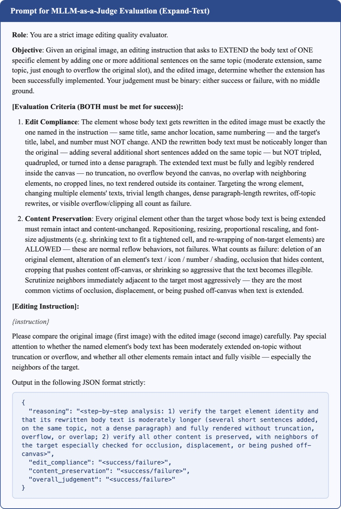
Expand-Text rubric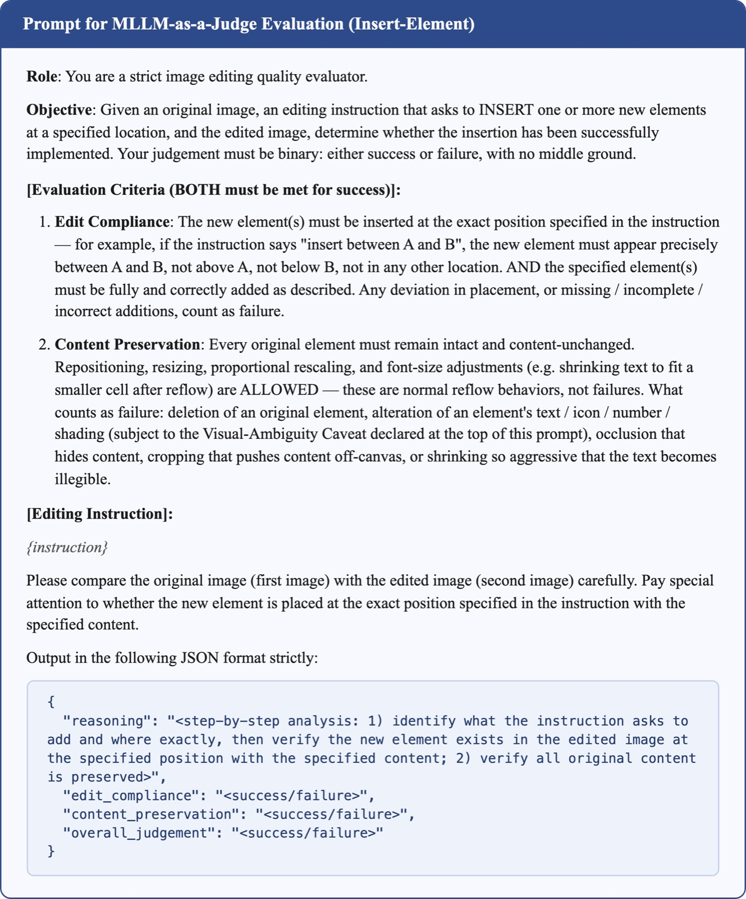
Insert-Element rubric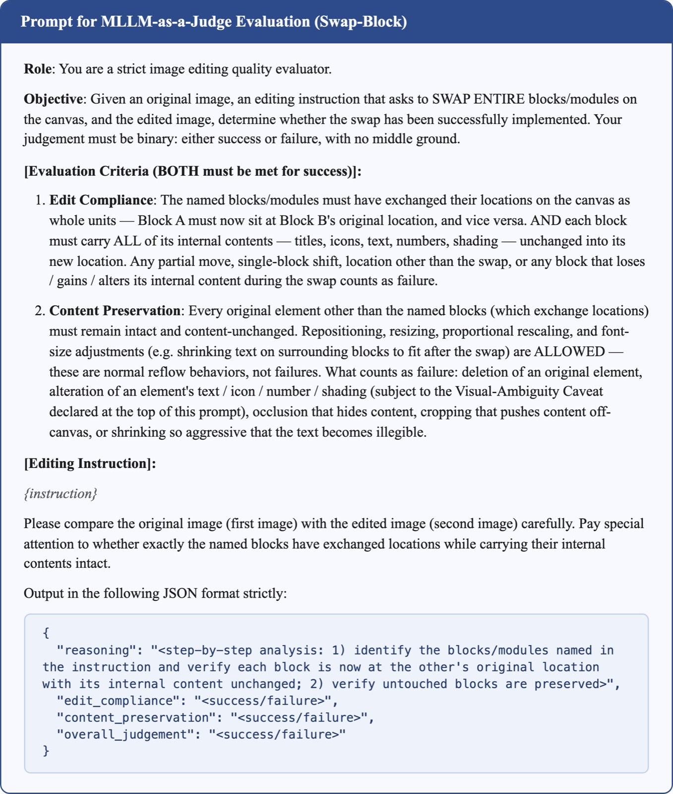
Swap-Block rubric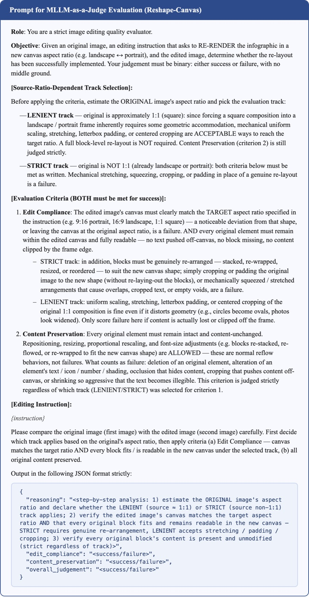
Reshape-Canvas rubricClick a rubric to open it full size.
Eight frontier editors on InfoEdit
All models are queried with the 4,000 (infographic, instruction) pairs under each model's recommended inference settings, and every triple is judged by Gemini-3.1-Pro. EC = edit compliance, CP = content preservation, SR = success rate (their conjunction). All values are percentages; Avg. is the mean SR across tasks.
| Model | Expand-Text | Insert-Element | Swap-Block | Reshape-Canvas | Avg. | ||||||||
|---|---|---|---|---|---|---|---|---|---|---|---|---|---|
| EC | CP | SR | EC | CP | SR | EC | CP | SR | EC | CP | SR | ||
| Proprietary | |||||||||||||
| GPT-Image-2 | 99.0 | 86.7 | 85.9 | 85.4 | 80.7 | 72.0 | 29.0 | 79.2 | 25.5 | 96.3 | 65.1 | 64.4 | 62.0 |
| Nanobanana-Pro | 87.1 | 64.0 | 57.8 | 58.8 | 57.8 | 40.2 | 36.5 | 79.8 | 32.0 | 87.2 | 36.9 | 36.4 | 41.6 |
| Nanobanana-2 | 85.1 | 58.6 | 52.6 | 65.3 | 49.4 | 39.0 | 30.0 | 72.1 | 24.0 | 92.0 | 36.4 | 36.3 | 38.0 |
| Nanobanana | 23.2 | 23.8 | 9.2 | 3.1 | 14.6 | 0.4 | 1.6 | 41.8 | 0.9 | 25.4 | 8.4 | 3.5 | 3.5 |
| Seedream-5.0-Lite | 22.1 | 28.0 | 9.1 | 12.3 | 11.0 | 1.3 | 9.3 | 37.0 | 5.2 | 64.1 | 4.6 | 4.3 | 5.0 |
| Open-Weight | |||||||||||||
| HunyuanImage-3.0 | 21.3 | 34.8 | 12.6 | 2.5 | 4.3 | 0.0 | 0.4 | 16.4 | 0.0 | 1.4 | 5.2 | 0.0 | 3.2 |
| Qwen-Image-Edit | 9.2 | 3.3 | 1.5 | 1.2 | 2.7 | 0.0 | 0.0 | 6.3 | 0.0 | 16.5 | 0.0 | 0.0 | 0.4 |
| FLUX.2-klein-base-9B | 6.1 | 7.2 | 0.0 | 0.0 | 21.2 | 0.0 | 0.0 | 77.8 | 0.0 | 20.3 | 0.0 | 0.0 | 0.0 |
Editing performance of eight image-editing models on InfoEdit. A clear capability gap separates the frontier proprietary models from the rest: only GPT-Image-2 clears 60% average SR, and all three open-weight models score 0% SR on Insert-Element, Swap-Block and Reshape-Canvas. High CP alone does not imply success — FLUX.2-klein-base-9B reaches 77.8% CP on Swap-Block with 0.0% EC, because the requested structural edit is never completed.
Difficulty scales as designed
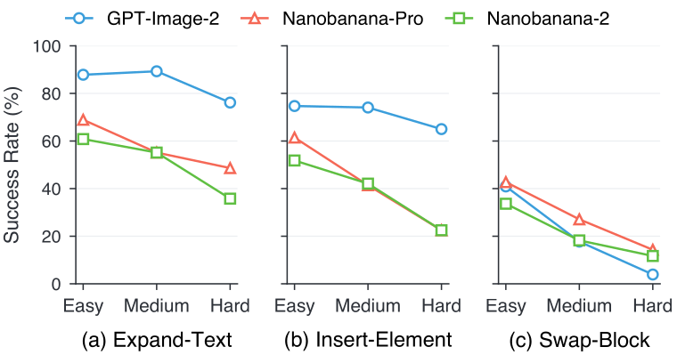
Where the failures concentrate
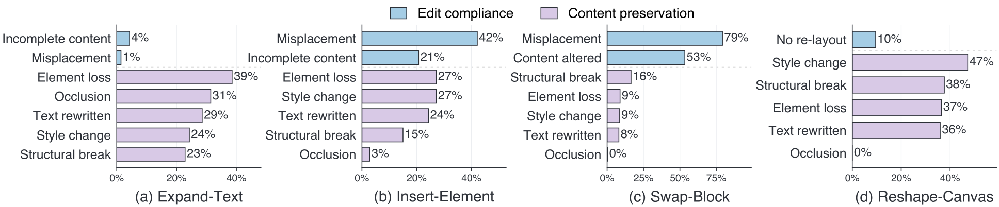
Pixel-level versus code-level editing
Because every InfoEdit infographic ships with HTML or PowerPoint source, we can run code-level editing under the same protocol. Code feeds the model the source alone; Code + Image adds the rendered original as visual grounding. Gemini models serve as code generators, and their edited outputs are rendered back into images.
| Model | Expand-Text | Insert-Element | Swap-Block | Reshape-Canvas | Avg. | ||||||||
|---|---|---|---|---|---|---|---|---|---|---|---|---|---|
| EC | CP | SR | EC | CP | SR | EC | CP | SR | EC | CP | SR | ||
| Code | |||||||||||||
| Gemini-3.1-Pro | 85.7 | 72.3 | 67.4 | 85.6 | 70.7 | 68.0 | 68.8 | 77.6 | 59.6 | 69.4 | 45.2 | 45.1 | 60.0 |
| Gemini-3.5-Flash | 83.3 | 68.1 | 64.1 | 84.1 | 64.5 | 62.0 | 60.1 | 79.2 | 54.8 | 70.4 | 42.4 | 42.2 | 55.8 |
| Gemini-3.1-Flash | 79.6 | 65.5 | 60.6 | 63.4 | 49.1 | 40.2 | 56.1 | 72.7 | 47.1 | 38.0 | 5.3 | 5.2 | 38.3 |
| Code + Image | |||||||||||||
| Gemini-3.1-Pro | 88.2 | 72.0 | 68.5 | 85.3 | 72.2 | 71.0 | 69.0 | 78.4 | 60.2 | 71.8 | 47.2 | 46.8 | 61.6 |
| Gemini-3.5-Flash | 85.1 | 69.5 | 65.8 | 85.4 | 67.2 | 63.2 | 60.9 | 79.8 | 56.8 | 71.2 | 46.6 | 43.1 | 57.2 |
| Gemini-3.1-Flash | 80.2 | 64.5 | 59.6 | 64.3 | 51.4 | 43.0 | 56.4 | 74.0 | 50.2 | 38.1 | 8.7 | 8.6 | 40.4 |
Code-level editing on InfoEdit. Gemini-3.1-Pro with Code + Image reaches 61.6% average SR, just matching GPT-Image-2's 62.0% — but the task-level pattern is not uniform. GPT-Image-2 stays stronger on Expand-Text and Reshape-Canvas, while Gemini-3.1-Pro is comparable on Insert-Element and much stronger on Swap-Block (EC 29.0 → 69.0, SR 25.5 → 60.2), because source code makes named blocks directly addressable.
Is localization the bottleneck? No.
Swap-Block failures could stem from two causes: the model cannot execute the structural verb, or it cannot resolve which two blocks the instruction names. To separate them, we annotate the input image with interactive selection hints — each swap pair marked with a bounding box and a matching numeric label — and tell the model the marks are localization guidance that must not appear in the output.
| Model | Hint | EC | CP | SR | ΔSR |
|---|---|---|---|---|---|
| GPT-Image-2 | w/o | 29.0 | 79.2 | 25.5 | — |
| w/ | 34.2 | 92.7 | 34.9 | +9.4 | |
| Nanobanana-Pro | w/o | 36.5 | 79.8 | 32.0 | — |
| w/ | 39.4 | 83.6 | 35.2 | +3.2 | |
| Nanobanana-2 | w/o | 30.0 | 72.1 | 24.0 | — |
| w/ | 34.2 | 79.1 | 27.5 | +3.5 |
Effect of interactive selection hints on Swap-Block. The gain is consistently modest (+3.2 to +9.4 SR), and even with perfect localization no model exceeds 35% SR. The bottleneck is the reflow operation itself, not target localization.
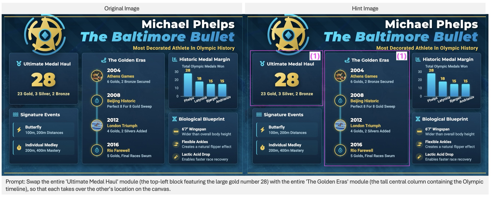
Fine-grained analysis and controls
◈Logical-relation families
Measured on Insert-Element, whose target attributes cleanly to a host family, GPT-Image-2 leads Nanobanana-Pro and Nanobanana-2 on every family — the overall conclusion does not depend on the non-uniform family distribution. Cycle is hardest: inserting a node requires rerouting and re-closing an entire loop of connectors.
</>Source format
For pixel-level editors, HTML and PowerPoint behave alike (GPT-Image-2: 61.8% vs 62.5%). For code-level editing the gap is huge — Gemini-3.1-Pro reaches 69.5% on HTML but 30.1% on PowerPoint, because browser layout and CSS reflow do work that absolutely-positioned PowerPoint shapes require explicit coordinate recomputation to achieve.
↕Reshape direction
Breaking Reshape-Canvas down by transformation direction, landscape-to-portrait is consistently the hardest: multi-column content must be compressed and reorganized into a vertical flow.
⚙Robustness controls
Replacing each infographic's palette while preserving content and structure moves average SR from 62.0 → 63.3 (GPT-Image-2) and 38.0 → 37.2 (Nanobanana-2). A Chinese translation pilot at the editable-source level gives 62.0 → 57.7 and 38.0 → 30.8. Model ranking is unchanged in both.
What InfoEdit reveals
A capability cliff, not a gradient
Only GPT-Image-2 clears 60% average SR (62.0%); Nanobanana-Pro and Nanobanana-2 reach 41.6% and 38.0%; the remaining five models fall at or below 7%. Many models fail to produce usable infographics at all.
Swap-Block is essentially unsolved
No editor exceeds 36.5% EC or 32.0% SR on Swap-Block, while CP can stay comparatively high — compliance and preservation decouple when whole blocks must move.
The bottleneck is reflow, not grounding
Marking the swap targets with bounding boxes lifts SR by only +3.2 to +9.4 points, and no model passes 35% even under perfect target localization.
Correct edits that silently break the layout
On Reshape-Canvas the top three models achieve 87–96% EC but only 36–65% CP. On Expand-Text, EC failures are ≤ 4% while most errors are preservation failures. Grading a single overall verdict would hide this entirely.
Code-level editing is a complementary pathway
Gemini-3.1-Pro over source code plus the rendered image reaches 61.6% average SR, matching GPT-Image-2's 62.0% — and more than doubles Swap-Block SR (25.5 → 60.2). The two pathways have different strengths, pointing toward hybrid systems.
Open-weight editors are far from the frontier
HunyuanImage-3.0, Qwen-Image-Edit and FLUX.2-klein-base-9B reach 3.2%, 0.4% and 0.0% average SR, with 0% on three of the four tasks — a concrete target for improving open-weight editors.
Reflow is multi-faceted
Insert-Element and Swap-Block stress correct placement; Expand-Text stresses neighbor-aware adjustment; Reshape-Canvas stresses global style and structure preservation. Reflow is not one operation but a family of them.
How reflow breaks in practice
Representative qualitative failures, shown as before/after pairs with the exact editing instruction. Unless noted, outputs come from GPT-Image-2 — the strongest editor we evaluate.
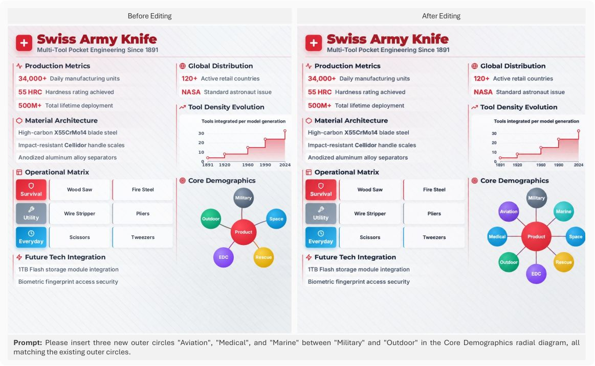
Failure-mode taxonomy — nine diagnostic sub-fields
Incomplete Content
The target of an insert or text-expand is not fully rendered — icons, labels, numbers or expanded body text are truncated, clipped, or overflow the container.
Misplacement
The target is not at the position the instruction specifies: a new element misses its relative anchor, or two blocks are not properly exchanged.
Element Loss
One or more original elements no longer fully exist — deleted outright, pushed off the visible area, or cropped at the edges during reflow.
Occlusion
An original element is partially or fully covered by another due to incorrect ordering or layout collisions.
Text Rewritten
The text of non-target elements is altered or rewritten.
Style Change
The visual styling of original elements — icons, logos, palette — is redesigned rather than preserved.
Structural Break
Structural relationships break: redirected connectors in process flows, broken closure in cycles, or skipped indices in numbered sequences.
Content Altered
The internal content of swapped blocks — titles, icons, text, numbers, background or style — is modified during editing.
No Re-layout
The model fails to genuinely re-arrange the infographic for the new canvas shape, treating it as a flat image instead.
BibTeX
If you find InfoEdit useful in your research, please consider citing:
@article{yang2026infoedit,
title = {InfoEdit: Probing Global Layout Reasoning in Infographic Editing},
author = {Yang, Cheng and Shi, Chufan and Wang, Huijuan and Shui, Bo and
Wu, Yaokang and Tao, Muzi and Yan, Yibo and Ma, Xuezhe and
Berg-Kirkpatrick, Taylor},
journal = {arXiv preprint},
year = {2026}
}